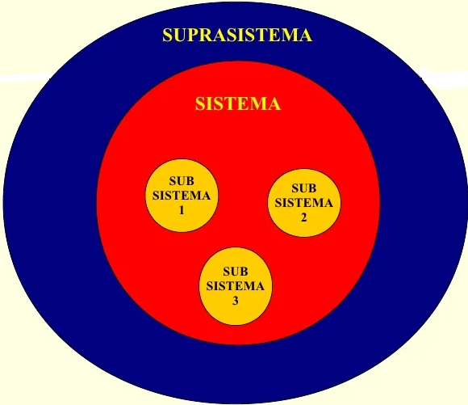
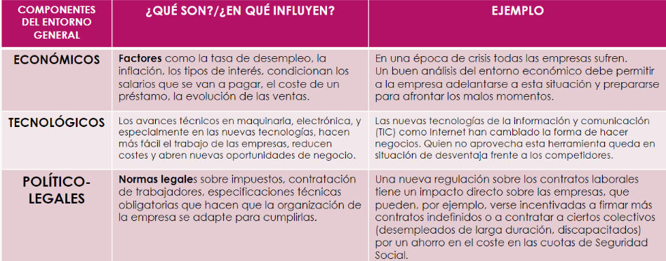
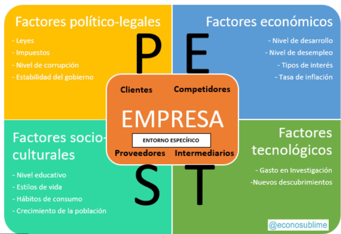
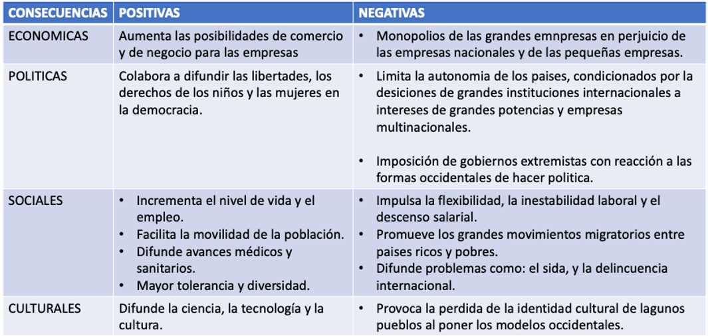

Esta asignatura aporta al perfil del Ingeniero en sistemas computacionales la capacidad de coordinar y participar en proyectos interdisciplinarios y una visión empresarial para detectar áreas de oportunidad que le permitan emprender y desarrollar proyectos aplicando las tecnologías de la información y comunicación.
La materia consiste en la identificación de las áreas básicas de una organización, su administración y su entorno considerando el aspecto de tomas de decisiones y la dinámica del proceso administrativo. Esta asignatura se relaciona con los temas de etapas de la administración de proyecto y metodología de administración de proyectos con la materia de gestión de proyectos de software y con los temas de desempeño gerencial y organizacional con la materia de cultura empresarial.
El entorno de la empresa hace referencia a los factores externos que influyen en la empresa y en su actividad y, desde luego, es tan relevante como las actividades diarias de los empleados.
El analisis del entorno de cualquier empresa implica un estudio de gran profundidad y resulta de gran trascendencia.
Modelos de sistemas

¿Qué es un sistema?
La empresa es un sistema, que está formada por una serie de elementos, que se organizan y se relacionan entre sí, estos elementos se organizan a su vez en subsistemas como:
• El área de producción y aprovisionamiento.
• El área comercial.
• El área de recursos humanos que también se relacionan entre sí.
Cualquier decisión en alguno de ellos afectará a los otros factores, además este sistema que forma la empresa forma parte de un sistema mayor.
Sistema Empresarial
En ocasiones, los proveedores o los clientes tienen mucho poder de negociación debido a su tamaño, e imponen sus condiciones a las empresas.
Sistema Abierto
La empresa no es un ente aislado, sino que interacciona con todo lo que le rodea.
La verdadera productividad de la empresa será evidente cuando el valor de mercado de los productos de una empresa sea mayor que sus recursos de insumo. Las organizaciones de negocios que usen los recursos limitados con mayor eficacia y eficiencia tendrán más ganancias brutas.
Un modelo de sistemas abiertos ve a una organización como dinámica y continuamente interactuando con su medio, en la medida que toma sus insumos, actúa para transformarlos y producir resultados. Los insumos o ingresos de la organización son sus recursos productivos, que luego se usan para la producción o ensamblado de bienes finales o servicios, que son sus productos o sus resultados.
Medios de las empresas
La administración entonces es un proceso a través del cual se coordinan y optimizan los recursos de un grupo social con el fin de lograr la máxima eficacia, calidad y productividad en la consecución de sus objetivos.
La estrategia empresarial hace referencia al conjunto de acciones que conducen a una ventaja competitiva a largo plazo, lo cual resulta imprescindible para llevar a cabo el análisis del entorno de la empresa, pues es necesario adaptarse a éste.
El entorno específico
El análisis del entorno específico es fundamental a la hora de decidir dónde se ubica la empresa. Los principales componentes del entorno específico son los siguientes:
El entorno general
En este caso nos referimos a factores más difíciles de controlar, no tan directamente vinculados a la empresa pero que en muchas ocasiones tienen una influencia decisiva.

Técnica para analizar el entorno de una empresa

Cultura corporativa
La definición de cultura organizacional o corporativa enfatiza los supuestos y profundos patrones de significado, los valores, las normas y las expectativas, filosofías, marcos de referencia o las regularidades conductuales observables como los ritos, rituales, y estructuras (Abrahamson y Fombrun, 1974).
En sí, constituye el conjunto de normas, valores y pautas de conducta que comparten todos los que integran la empresa, que a su vez se reflejada en su comportamiento que alinea a los empleados, con la misión, visión y sobre todo con los valores corporativos para posteriormente ser enseñados a los nuevos miembros. Estos son algunos de los factores que lo determina:
La cultura es un factor de integración, ya que los miembros del grupo para sentirse parte deben cumplir con las pautas establecidas. Se puede trabajar y gestionar sobre la misma para alinearla con la filosofía y lograr una identidad coherente en todos los sentidos.
Cabe mencionar que la cultura corporativa es determinante en el éxito o fracaso de una empresa por que se refleja en prácticas, políticas y comportamientos que influirian directamente en la actitud y rendimiento de sus empleados.
Ventajas de la cultura corporativa
Los beneficios de contar con una cultura corporativa sólida y compartida por todos los miembros de la empresa son muchos.
En resumen, ejecutar de forma satisfactoria la cultura empresarial se traduce en ventajas competitivas y posicionamiento de mercado. Por esta razón de peso, sería un grave error dejarla a la deriva.
Impacto de la cultura corporativa en la organización.
Es de gran importancia considerar la cultura empresarial, pero también distinguir que, no tiene nada que ver con los procesos productivos de la empresa, pero sí tiene un impacto directo en las cuestiones organizativas.
EJEMPLO
Una empresa de producción, que fabrica productos de dermatológicos para niños, seguirá produciendo este producto, y una empresa de consultoría, que se dedica al Marketing e investigación de mercado, seguirá ofreciendo este servicio, siempre que su negocio sea rentable.
¿Qué papel desempeña la cultura en la organización empresarial, entonces?
La cultura corporativa regula cuestiones como la duración y la frecuencia de las reuniones, la prohibición o el permiso de fumar, los entretenimientos extralaborales y la formación de equipos, el código de vestimenta, las condiciones para el diálogo, el alcance de los informes, la misión y los objetivos de la empresa, la disciplina, la estrategia de apoyo, etc.
Pasos recomendados para definir la cultura organizacional en una empresa.
¿Qué es el teambuilding?
El Team Building o "construcción de equipos", son usados por algunas empresas, es un término colectivo para definir un conjunto de actividades que busca formar equipos de alto desempeño y mejorar las relaciones interpersonales dentro de un grupo (trabajo en equipo, integración, creatividad e innovación).
Tipos de culturas corporativas.
Consideraciones a tomar en una cultura organizacional.
Si la estructura de una empresa va más allá de las fronteras de un país, el modelo de la cultura corporativa actual en la sucursal extranjera siempre debe ser revisado y ajustado. Considerando después de todo, que lo que es bueno en un país puede no ser bueno para otro.
En cualquier caso, al implementar un modelo de cultura corporativa, se debe prestar atención no sólo a los aspectos específicos de la empresa, sino también a la ubicación geográfica de la empresa, el género, la edad y la condición social de los empleados. Después de todo, el esquema de relaciones corporativas, que funciona perfectamente en un equipo joven, no será efectivo en un equipo de personas de la familia o equipos adultos.
Con un enfoque competente, la cultura corporativa puede convertirse en un medio eficaz de gestión, de unificación de la organización y de establecimiento exitoso de la empresa en el mercado.
La globalización y la administración
La globalización y la administración están estrechamente relacionadas en el mundo empresarial y organizacional actual. La globalización se refiere al proceso de interconexión e interdependencia económica, social y cultural a nivel mundial, a través de la eliminación de barreras comerciales y de comunicación, lo que ha llevado a una mayor integración de los mercados y a la interacción entre diferentes culturas y países. Por otro lado, la administración se refiere a la planificación, organización, dirección y control de los recursos de una organización con el fin de lograr sus objetivos.
¿Qué integra la globalización?
Proceso de globalización
La globalización abarca todos los ámbitos, así que es posible señalar diferentes tipos de globalización:
En la era de mercados globales, las empresas requieren habilidades para colocar productos estandarizados de mejor calidad y precio que los de competencia, lo que implica eficiente los procesos y utilizar economías de escala. Para las empresas, las normas y estándares mundiales señalan el marco de referencia de sus niveles de competitividad.
Las grandes empresas globales que invierten y se establecen en diversos países, son seguidas por sus proveedores, quienes también se establecen en los mismos lugares. Los sistemas de producción, distribución y consumo nacionales se fragmentan, y los sectores que no se integran a las cadenas de producción internacional en las empresas globalizadas desaparecen.
En el siguiente cuadro es posible observar cómo varían las funciones de la empresa de acuerdo con su evolución hacia la globalización.
La internacionalización y la globalización han modificado la forma de operación de las empresas y de las economías.
Internacionalización es la expansión de relaciones comerciales y económicas entre países.
La globalización parte de la idea de una economía sin fronteras donde los productos, el capital y las personas circulan libremente.
¿Qué deben hacer las empresas para adaptarse?
Los bloques económicos se conforman por la integración de varios países que constituyen una macrorregión económica y financiera.
Efectos económicos de la globalización
La globalización económica tiene aspectos positivos y negativos en los países. Con la globalización, las organizaciones son capaces de cruzar las fronteras nacionales fácilmente gracias a la gran velocidad y bajo costo de las comunicaciones, transporte y sistemas de información actuales.
Las empresas ya no están limitadas a los recursos o al potencial de mercado de su país.
La competencia se centra no sólo en los precios, sino también en la calidad, nivel de servicio y rapidez en la entrega de bienes o servicios. Los sistemas de información permiten que las organizaciones compitan en el ambiente global, al facilitar la productividad, la calidad y la rapidez de respuesta.
Existe un rápido aumento de productos y servicios que necesitan mayor promoción; y los trabajadores calificados sustituyen a los que no se especializaron.
Así también surgen empresas basadas en la administración del conocimiento y las tecnologías de información. A continuación, las ventajas y desventajas de la globalización.

El éxito de una nación en la economía global no se determina por la cantidad de sus recursos naturales, sino por la calidad de sus recursos humanos. Un país no puede esperar ser competitivo sin una fuerza de trabajo capacitada y educada.
La pequeña y mediana empresa y la globalización.
Si bien es cierto que la mayoría de las micro y pequeñas empresas no participan directamente en negocios internacionales, también lo es que está creciendo el número de pequeños negocios que funcionan como importadores o exportadores. Las empresas que incursionan en el mercado global deben considerar que los factores:
Que son base del posicionamiento en el mercado global.
Las empresas requieren mayor eficiencia, calidad y productividad para ser más competitivas y poder competir en un mercado global que implica la participación en muchos mercados distintos y distantes. Crecen las oportunidades para quienes fabrican buenos productos y servicios, por lo que es necesario trabajar con estándares de calidad de clase mundial, y desaparecen para quienes operan con baja calidad.
La tarea no es fácil; requiere, en el plano personal, visión, esfuerzo y constancia; y en el plano organizacional, operar con los factores básicos para afrontar la globalización:
¿Qué es una impronta?
Una impronta puede tener diferentes significados dependiendo del contexto en el que se utilice. Aquí te presento algunas de las posibles definiciones:
1. En biología y etología: La impronta es un proceso que ocurre en ciertas especies animales, especialmente aves y mamíferos, durante un período temprano de su vida, en el cual establecen un fuerte vínculo con una figura materna o un objeto determinado. Este proceso puede influir en su comportamiento y en su relación con su entorno posteriormente.
2. En arte: La impronta se refiere a la marca, huella o señal que un artista deja en su obra, que puede ser su estilo distintivo o su firma. Es una forma de identificación del autor y de reconocimiento de su trabajo.
3. En psicología: La impronta puede referirse a la huella que las experiencias tempranas de una persona dejan en su desarrollo psicológico y en su personalidad. Estas experiencias, especialmente durante la infancia, pueden tener un impacto duradero en la forma en que una persona percibe y se relaciona con el mundo.
4. En tecnología: La impronta digital se refiere a la información única y específica que identifica a un dispositivo electrónico o a una actividad en línea. Esto puede incluir la dirección IP, el historial de navegación, las cookies, entre otros datos, que se utilizan para rastrear y reconocer la actividad en línea de una persona o dispositivo.
En general, la impronta se refiere a una marca, huella o señal que queda como resultado de un proceso o experiencia, ya sea en biología, arte, psicología, tecnología u otros contextos.